The window
The ArborStudio window has a toolbar at the top, the generator list on the left, the 3D viewport in the centre, the properties on the right and an activity panel below the viewport.

Menus
On macOS the menus are in the menu bar at the top of the screen. On Windows and Linux they are at the top of the window, above the toolbar. Both offer the same commands:
| Menu | Commands |
|---|---|
| File | New tree, Open, Open Recent, Save, Save As, export options and exports (GLB, OBJ, JSON, variations), Quit (Windows and Linux). |
| Edit | Undo, Redo, Delete generator, Randomize seed. |
| Generators | Add a trunk, branches, roots or leaves; delete the selected generator. |
| Presets | Replace the tree with one of the species presets. |
| View | Render mode, ground grid, leaves, selection highlight, wind preview, helpers for forces and pruning, collision objects, Frame tree. On macOS also Enter Full Screen. |
| Agent | Connect a coding agent: shows how to connect an MCP client. |
| Window (macOS) | Minimize, Zoom, Bring All to Front. |
| Help | ArborStudio Help, Keyboard and mouse, About ArborStudio. |
On macOS, About ArborStudio, Hide and Quit are in the application menu.
Toolbar
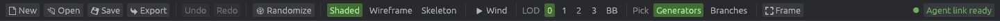
| Control | Function |
|---|---|
| New | Starts a new tree from the Sapling preset. |
| Open, Save | Open and save project files. See Projects and files. |
| Export | Export menu with the level-of-detail options and the GLB, OBJ and JSON exports. |
| Undo, Redo | Step back and forward through your changes. |
| Randomize | Picks a new random seed: the same species as a different individual. |
| Shaded, Wireframe, Skeleton | Render mode of the viewport. |
| Wind | Plays or stops the wind animation in the viewport. |
| LOD 0 1 2 3 BB | Shows a level of detail; BB is the billboard. See Levels of detail. |
| Pick: Generators, Branches | What a click in the viewport selects: a whole generator, or a single branch for editing. |
| Frame | Fits the tree in the viewport (F). |
| Agent link | Status of the MCP server. Click it to see connection details. |
Generation panel
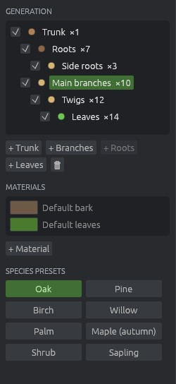
The left panel has three sections:
- Generation lists the generators as a tree that mirrors how the parts grow on each other. The number after each name, such as
×10, is the count per parent. Use the check box to switch a generator off without deleting it, and click a name to select it. The buttons below add a trunk, branches, roots or leaves; the bin deletes the selected generator and everything that grows on it. - Materials lists the tree's materials. Click one to edit it, or click + Material to create one. See Materials and textures.
- Species presets replace the current tree with a preset. You can undo this.
Viewport
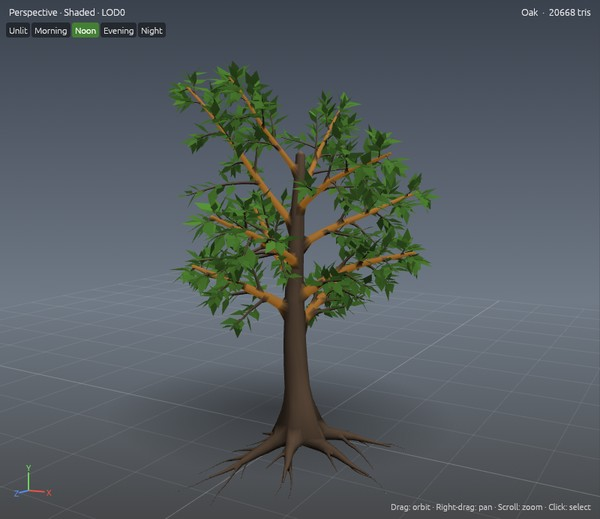
The viewport shows the tree as it will be exported. The line at the top left names the camera, the render mode and the level of detail; the top right shows the tree's name and triangle count.
Navigating
| Action | Mouse or key |
|---|---|
| Orbit around the tree | Drag with the left mouse button. |
| Pan | Drag with the right mouse button. |
| Zoom | Scroll wheel or trackpad scroll. |
| Select a generator | Click a part of the tree. Click the sky or ground to clear the selection. |
| Frame the tree | F or the Frame button. |
Lighting
The buttons at the top left of the viewport switch between five lighting presets: Unlit shows colours and textures without shading, and Morning, Noon, Evening and Night light the tree from different sun positions and sky colours. Lighting affects only the preview, never the exported model.
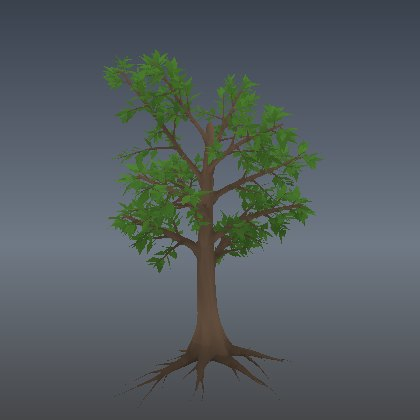
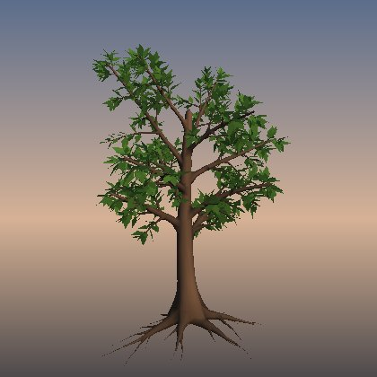

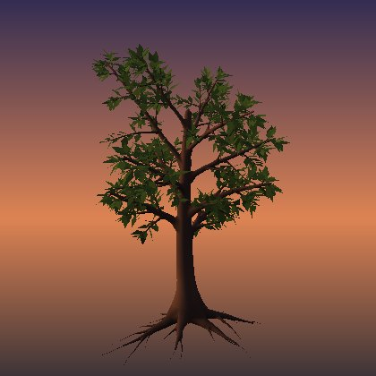
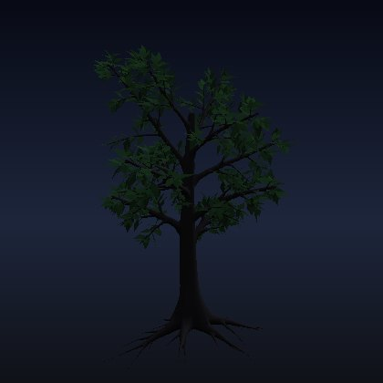
Render modes
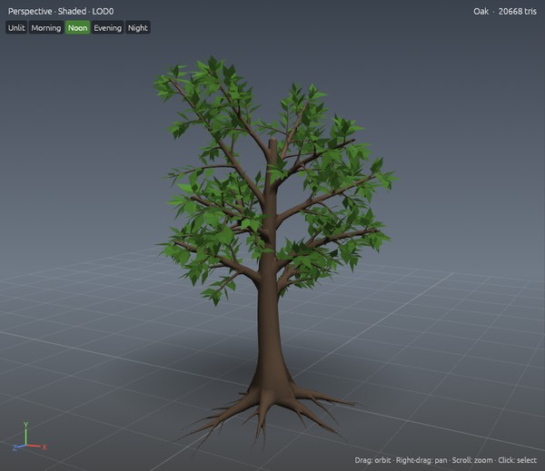
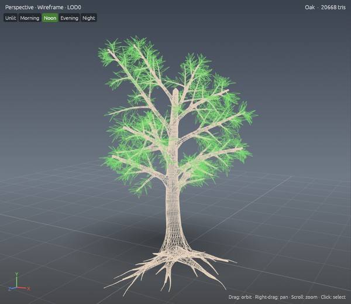
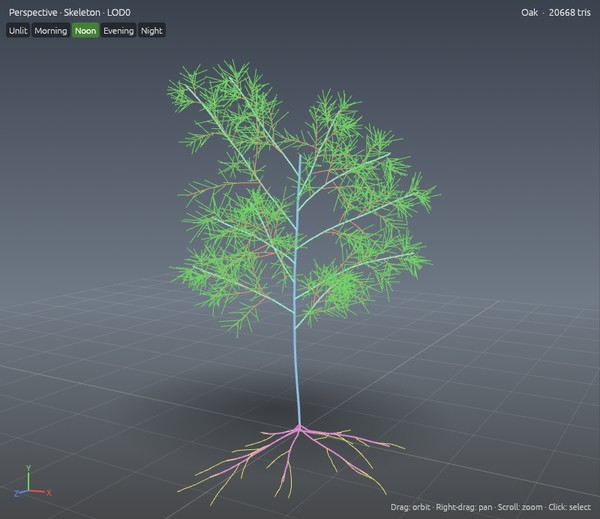
In the View menu you can also hide the ground grid and the leaves, turn off the highlight of the selected generator, and show the helpers for forces, pruning and collision objects.
Properties panel
The right panel shows the settings of the selected generator, followed by the Tree section with settings for the whole tree. Settings are grouped into collapsible sections such as Generation, Spine, Skin and Leaves. Rest the pointer on a setting's name to see a short explanation.
Drag a slider to change a value, or click the number next to it and type a value. The small curve button at the end of a row opens the curve editor for that setting; it turns green when a curve is active.
Activity and statistics
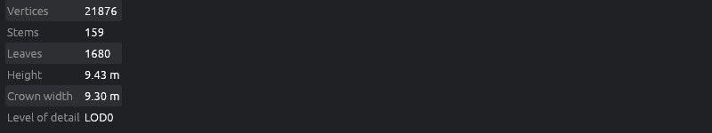
The panel below the viewport has two tabs. Agent activity logs what connected coding agents do, with the time and the tool they called. Statistics shows the triangle, vertex, stem and leaf counts, the height and crown width of the tree and the level of detail on display.
Status bar
The bar at the bottom of the window shows messages on the left, such as the file that was saved, and a summary of the current tree on the right: triangles, vertices, stems, leaves, height and seed.